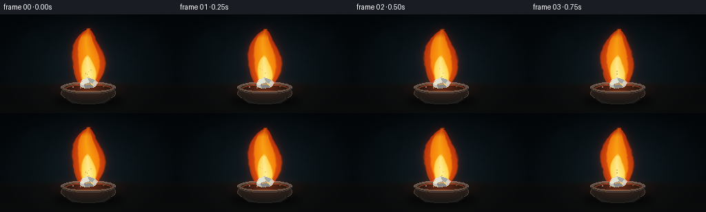
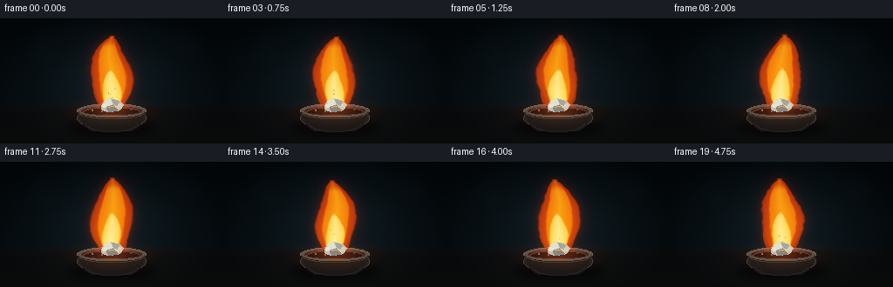

CODING AGENTS AS PIXEL WORLD MODELS
traex/GPT-5.6-Sol · material_0006
点击播放 · 原生 RGB 像素
逐轮保存的候选
回放视频、检查图与代码变化。
每份候选均可单独播放。实际图片检查记录在下方工具轨迹中。
候选 01播放与检查图
点击播放 · 原生 RGB 像素

展开代码变化
--- 上一保存版本
+++ 本次保存版本
@@ -0,0 +1,258 @@
+from pathlib import Path
+import math
+import numpy as np
+import cv2
+from PIL import Image, ImageDraw, ImageFilter
+import artifact_io
+
+# Deterministic procedural rendering; no input image or external asset is used.
+CASE_DIR = Path(__file__).resolve().parent
+W, H, N, FPS = 256, 144, 20, 4.0
+SS = 3
+WW, HH = W * SS, H * SS
+rng = np.random.default_rng(743921)
+
+
+def smoothstep(a, b, x):
+ z = np.clip((x-a)/(b-a), 0.0, 1.0)
+ return z*z*(3.0-2.0*z)
+
+
+def composite(im, rgb, alpha):
+ a = np.clip(alpha, 0, 1)[..., None]
+ return im*(1-a) + np.asarray(rgb, np.float32)*a
+
+
+def add_emission(im, rgb, alpha):
+ return np.clip(im + np.asarray(rgb, np.float32)*alpha[..., None], 0, 255)
+
+
+def pil_layer(draw_fn, blur=0):
+ lay = Image.new('RGBA', (WW, HH), (0, 0, 0, 0))
+ d = ImageDraw.Draw(lay)
+ draw_fn(d)
+ if blur:
+ lay = lay.filter(ImageFilter.GaussianBlur(blur*SS))
+ return np.asarray(lay).astype(np.float32)
+
+
+def overlay_rgba(im, rgba):
+ a = rgba[..., 3:4]/255.0
+ return im*(1-a) + rgba[..., :3]*a
+
+# Pixel coordinates in final-resolution units, represented on a supersampled grid.
+yy, xx = np.mgrid[0:HH, 0:WW].astype(np.float32)
+x = xx / SS
+y = yy / SS
+
+# ---- static cinematic laboratory setting ----
+Y = y / (H-1)
+X = x / (W-1)
+base = np.zeros((HH, WW, 3), np.float32)
+# Blue-black background, subtly brighter around the subject.
+base[..., 0] = 4 + 8*Y
+base[..., 1] = 10 + 12*Y
+base[..., 2] = 14 + 13*Y
+spot = np.exp(-(((x-128)/87)**2 + ((y-66)/72)**2)*1.4)
+base += spot[..., None] * np.array([8, 11, 12], np.float32)
+# Fine, fixed photographic grain (kept very subtle).
+noise_small = rng.normal(0, 1, (H, W)).astype(np.float32)
+noise = cv2.resize(noise_small, (WW, HH), interpolation=cv2.INTER_CUBIC)
+noise = cv2.GaussianBlur(noise, (0,0), 0.45*SS)
+base += noise[...,None]*0.7
+
+# Defocused background glassware and indicator lights.
+def bokeh(d):
+ def E(box, fill, outline=None, width=1):
+ b=tuple(int(v*SS) for v in box); d.ellipse(b, fill=fill, outline=outline, width=width*SS)
+ E((31,20,66,56), (15,42,49,22), (35,74,81,22), 1)
+ E((199,12,235,48), (20,30,43,22), (52,70,83,18), 1)
+ E((47,65,56,74), (30,116,123,22))
+ E((218,69,224,75), (204,73,24,25))
+ E((74,31,80,37), (34,100,105,22))
+base = overlay_rgba(base, pil_layer(bokeh, blur=5.0))
+
+# Workbench plane.
+table_edge = smoothstep(98, 104, y)
+table_rgb = np.stack([14+12*(Y-.7), 16+11*(Y-.7), 17+10*(Y-.7)], axis=-1)
+base = base*(1-table_edge[...,None]) + table_rgb*table_edge[...,None]
+# Soft horizontal highlight and vignette.
+base += (np.exp(-((y-104)/3.2)**2)*3.0)[...,None]*np.array([1.0,.72,.48])
+vignette = np.clip(1 - 0.38*((X-.5)**2/.25 + (Y-.48)**2/.32), .55, 1)
+base *= vignette[...,None]
+
+# Shadow beneath crucible.
+def shadow_draw(d):
+ d.ellipse((76*SS,116*SS,181*SS,135*SS), fill=(0,0,0,165))
+base = overlay_rgba(base, pil_layer(shadow_draw, blur=5.5))
+
+# Crucible, back rim and body (flame will sit over this, then foreground details return on top).
+def crucible_back(d):
+ S=SS
+ # Lower body and back lip.
+ d.ellipse((88*S,101*S,168*S,128*S), fill=(28,29,29,255), outline=(67,64,59,255), width=1*S)
+ d.polygon([(89*S,106*S),(167*S,106*S),(160*S,124*S),(151*S,130*S),(105*S,130*S),(96*S,124*S)], fill=(23,23,23,255))
+ d.ellipse((88*S,98*S,168*S,115*S), fill=(77,74,68,255), outline=(124,115,101,210), width=1*S)
+ d.ellipse((93*S,101*S,163*S,112*S), fill=(13,14,14,255), outline=(42,41,38,255), width=1*S)
+ # A faint reddish reflection at the rear wall.
+ d.arc((94*S,101*S,162*S,116*S), 185, 352, fill=(124,55,31,170), width=2*S)
+base = overlay_rgba(base, pil_layer(crucible_back))
+
+# Static tiny ash grains.
+def ash_draw(d):
+ S=SS
+ for px,py,r,c in [(106,106,1,(152,143,128,180)),(150,105,.8,(112,105,94,170)),(117,107,.7,(184,175,157,160)),(142,107,.6,(151,139,121,140))]:
+ d.ellipse(((px-r)*S,(py-r)*S,(px+r)*S,(py+r)*S),fill=c)
+base = overlay_rgba(base, pil_layer(ash_draw, blur=.15))
+
+# Reusable low-frequency spatial turbulence maps.
+noise_maps=[]
+for k in range(4):
+ n=rng.normal(0,1,(48,86)).astype(np.float32)
+ n=cv2.resize(n,(WW,HH),interpolation=cv2.INTER_CUBIC)
+ n=cv2.GaussianBlur(n,(0,0),1.15*SS)
+ n=(n-n.mean())/(n.std()+1e-6)
+ noise_maps.append(n)
+
+# Particle trajectories: seed offset, lateral velocity, speed, life and size.
+particles=[]
+prng=np.random.default_rng(1907)
+for i in range(13):
+ particles.append((prng.uniform(0,5),prng.uniform(-5,5),prng.uniform(15,29),prng.uniform(.55,1.05),prng.uniform(.35,.82),prng.uniform(-8,8)))
+
+frames=[]
+for fi in range(N):
+ t=fi/FPS
+ im=base.copy()
+
+ # Orange light pools on the ceramic and tabletop, changing only gently.
+ pulse=0.96+0.035*math.sin(t*2.1)+0.018*math.sin(t*4.7+0.8)
+ pool=np.exp(-(((x-128)/47)**2+((y-109)/16)**2)*1.55)*pulse
+ im=add_emission(im,(47,15,3),pool*.82)
+ reflected=np.exp(-(((x-128)/30)**2+((y-106)/9)**2)*1.7)
+ im=add_emission(im,(35,12,2),reflected)
+
+ # A steady calcium flame. Its silhouette is coherent frame-to-frame, with restrained sway.
+ base_y=103.0
+ top=19.0 + 1.35*math.sin(t*2.05+0.3) + .65*math.sin(t*4.1)
+ v=(base_y-y)/(base_y-top)
+ valid=(v>=0)&(v<=1)
+ center=128 + (1.0+2.6*v)*np.sin(1.15*t + 6.0*v + .28) + .85*v*np.sin(2.4*t-10.5*v)
+ # Broad at the lower third, tapering into a tall lick.
+ width=3.0 + 23.0*np.power(np.clip(np.sin(np.pi*(v+.035)),0,1),.62)*np.power(np.clip(1-v,0,1),.18)
+ width *= 1 + .035*math.sin(3.1*t+.4)
+ n0=noise_maps[fi%4]
+ n1=noise_maps[(fi+1)%4]
+ blend=(math.sin(t*1.1)+1)/2
+ turb=n0*(1-blend)+n1*blend
+ dist=np.abs(x-center)/(width+1e-4)
+ ragged=.032*turb*(.25+.75*v)
+ outer=smoothstep(1.07,.91,dist-ragged)*valid
+ outer*=smoothstep(0, .035, v)*smoothstep(1.02,.965,v)
+
+ # Two smaller licking shoulders reinforce a natural, recognizable fire silhouette.
+ def tongue(cx0, ybase, ytop, wid, phase):
+ q=(ybase-y)/(ybase-ytop)
+ c=cx0 + (1.0+1.9*q)*np.sin(1.7*t+phase+5.5*q)
+ w=1.4+wid*np.power(np.clip(np.sin(np.pi*(q+.04)),0,1),.72)*np.power(np.clip(1-q,0,1),.28)
+ d=np.abs(x-c)/(w+1e-4)
+ a=smoothstep(1.07,.88,d-.025*turb)
+ return a*((q>=0)&(q<=1))*smoothstep(0,.05,q)*smoothstep(1.03,.95,q)
+ left=tongue(116.5,101,45+1.4*math.sin(t*1.9),9.0,2.1)
+ right=tongue(139.5,102,54+1.1*math.sin(t*2.3+1),8.0,4.4)
+ outer=np.maximum(outer,np.maximum(left*.90,right*.86))
+
+ # Large soft crimson halo, characteristic of the vivid orange-red calcium burn.
+ halo=cv2.GaussianBlur(outer.astype(np.float32),(0,0),5.5*SS)
+ halo2=cv2.GaussianBlur(outer.astype(np.float32),(0,0),12*SS)
+ im=add_emission(im,(118,22,2),halo*.48*pulse)
+ im=add_emission(im,(41,5,1),halo2*.58*pulse)
+
+ # Outer flame body: vermilion edges and a hotter orange center.
+ edge=np.clip(outer*(.72+.28*(1-dist)),0,1)
+ col_r=np.full_like(v,255.0)
+ col_g=55 + 54*np.clip(1-dist,0,1) + 20*(1-np.clip(v,0,1))
+ col_b=3 + 9*np.clip(1-dist,0,1)
+ color=np.stack([col_r,col_g,col_b],axis=-1)
+ a=np.clip(edge*(.79+.17*(1-v)),0,.97)
+ im=im*(1-a[...,None]) + color*a[...,None]
+
+ # Amber middle layer.
+ mid_dist=np.abs(x-(center-.4*np.sin(t+v*8)))/(width*.67+1e-4)
+ mid=smoothstep(1.04,.84,mid_dist-.018*turb)*valid
+ mid*=smoothstep(0,.045,v)*smoothstep(.94,.82,v)
+ mid_col=np.stack([np.full_like(v,255), 136+45*(1-mid_dist.clip(0,1)), 9+10*(1-mid_dist.clip(0,1))],axis=-1)
+ ma=np.clip(mid*(.64+.23*(1-v)),0,.9)
+ im=im*(1-ma[...,None])+mid_col*ma[...,None]
+
+ # White-gold incandescent core, held low and steady.
+ core_top=58.0+1.2*math.sin(t*2.0+.7)
+ cv=(base_y-y)/(base_y-core_top)
+ cvalid=(cv>=0)&(cv<=1)
+ cc=127.7+1.15*np.sin(1.4*t+5.4*cv)
+ cw=2.4+10.2*np.power(np.clip(np.sin(np.pi*(cv+.055)),0,1),.63)*np.power(np.clip(1-cv,0,1),.22)
+ cd=np.abs(x-cc)/(cw+1e-4)
+ core=smoothstep(1.05,.79,cd-.018*turb)*cvalid
+ core*=smoothstep(0,.06,cv)*smoothstep(1.02,.90,cv)
+ core_col=np.stack([np.full_like(cv,255), 220+28*(1-cd.clip(0,1)), 79+89*(1-cd.clip(0,1))],axis=-1)
+ ca=np.clip(core*(.73+.23*(1-cv)),0,.98)
+ im=im*(1-ca[...,None])+core_col*ca[...,None]
+
+ # Pinpoint white-hot origin on the calcium surface.
+ hot=np.exp(-(((x-128)/8.5)**2+((y-98.5)/3.8)**2)*1.65)*pulse
+ im=add_emission(im,(98,75,30),hot*.58)
+
+ # Sparse, short-lived rising sparks; vivid but not a shower.
+ spark_rgba=Image.new('RGBA',(WW,HH),(0,0,0,0))
+ sd=ImageDraw.Draw(spark_rgba)
+ for j,(offset,vx,vy,life,size,curve) in enumerate(particles):
+ age=(t-offset)%5.0
+ if age<life:
+ frac=age/life
+ px=128+vx*age+curve*age*age+2.2*math.sin(j*2.7+age*4)
+ py=98-vy*age-7*age*age
+ fade=(math.sin(math.pi*frac))**.7
+ r=max(.32,size*(1-.45*frac))*SS
+ fill=(255,170+int(70*(1-frac)),40,int(235*fade))
+ sd.ellipse((px*SS-r,py*SS-r,px*SS+r,py*SS+r),fill=fill)
+ spark_arr=np.asarray(spark_rgba.filter(ImageFilter.GaussianBlur(.18*SS))).astype(np.float32)
+ im=overlay_rgba(im,spark_arr)
+
+ # Foreground calcium fragment: silvery metal becoming chalk-white oxide at the edges.
+ # This explicitly keeps the fuel visible rather than showing an isolated flame.
+ def metal_draw(d):
+ S=SS
+ poly=[(116*S,101*S),(119*S,95*S),(127*S,92*S),(137*S,95*S),(142*S,100*S),(137*S,106*S),(124*S,108*S),(116*S,105*S)]
+ d.polygon(poly,fill=(190,190,181,255),outline=(238,226,198,255))
+ d.polygon([(119*S,95*S),(127*S,92*S),(130*S,99*S),(121*S,102*S)],fill=(226,224,208,255))
+ d.polygon([(127*S,92*S),(137*S,95*S),(134*S,101*S),(130*S,99*S)],fill=(164,166,161,255))
+ d.polygon([(121*S,102*S),(130*S,99*S),(137*S,106*S),(124*S,108*S)],fill=(132,134,131,255))
+ d.polygon([(130*S,99*S),(134*S,101*S),(137*S,106*S)],fill=(243,219,165,255))
+ # Powdery oxide nodules and a glowing fissure.
+ d.ellipse((117*S,98*S,122*S,103*S),fill=(234,230,214,245))
+ d.ellipse((135*S,98*S,140*S,103*S),fill=(220,216,199,235))
+ d.line([(123*S,103*S),(128*S,101*S),(135*S,103*S)],fill=(255,174,71,245),width=1*S)
+ metal=pil_layer(metal_draw,blur=.08)
+ # Metal is partly transparent only where the flame's bright source should shine through.
+ im=overlay_rgba(im,metal)
+
+ # Front rim gives the vessel depth and catches a warm moving reflection.
+ def front_draw(d):
+ S=SS
+ d.arc((88*S,98*S,168*S,117*S), 8, 172, fill=(34,33,31,255), width=3*S)
+ d.arc((89*S,99*S,167*S,116*S), 12, 168, fill=(91,65,49,220), width=1*S)
+ d.arc((96*S,105*S,160*S,131*S), 12, 168, fill=(50,47,43,180), width=1*S)
+ im=overlay_rgba(im,pil_layer(front_draw,blur=.08))
+
+ # A compact bright reflection on the front lip changes subtly with the flame.
+ lip=np.exp(-(((x-128)/23)**2+((y-110.7)/1.25)**2)*1.4)*pulse
+ im=add_emission(im,(50,20,5),lip*.48)
+
+ # Downsample with Lanczos for clean photographic antialiasing.
+ im=np.clip(im,0,255).astype(np.uint8)
+ small=cv2.resize(im,(W,H),interpolation=cv2.INTER_LANCZOS4)
+ frames.append(small)
+
+frames=np.stack(frames).astype(np.uint8)
+artifact_io.save(frames, CASE_DIR)
+print(f'Saved {len(frames)} RGB frames at {W}x{H}, {FPS:g} fps')
候选 02播放与检查图
点击播放 · 原生 RGB 像素


展开代码变化
--- 上一保存版本
+++ 本次保存版本
@@ -137,7 +137,7 @@
top=19.0 + 1.35*math.sin(t*2.05+0.3) + .65*math.sin(t*4.1)
v=(base_y-y)/(base_y-top)
valid=(v>=0)&(v<=1)
- center=128 + (1.0+2.6*v)*np.sin(1.15*t + 6.0*v + .28) + .85*v*np.sin(2.4*t-10.5*v)
+ center=128 + (1.0+3.0*v)*np.sin(1.15*t + 6.0*v + .28) + 1.05*v*np.sin(2.4*t-10.5*v)
# Broad at the lower third, tapering into a tall lick.
width=3.0 + 23.0*np.power(np.clip(np.sin(np.pi*(v+.035)),0,1),.62)*np.power(np.clip(1-v,0,1),.18)
width *= 1 + .035*math.sin(3.1*t+.4)
@@ -146,7 +146,7 @@
blend=(math.sin(t*1.1)+1)/2
turb=n0*(1-blend)+n1*blend
dist=np.abs(x-center)/(width+1e-4)
- ragged=.032*turb*(.25+.75*v)
+ ragged=.045*turb*(.25+.75*v)
outer=smoothstep(1.07,.91,dist-ragged)*valid
outer*=smoothstep(0, .035, v)*smoothstep(1.02,.965,v)
@@ -165,14 +165,15 @@
# Large soft crimson halo, characteristic of the vivid orange-red calcium burn.
halo=cv2.GaussianBlur(outer.astype(np.float32),(0,0),5.5*SS)
halo2=cv2.GaussianBlur(outer.astype(np.float32),(0,0),12*SS)
- im=add_emission(im,(118,22,2),halo*.48*pulse)
- im=add_emission(im,(41,5,1),halo2*.58*pulse)
+ im=add_emission(im,(126,13,7),halo*.55*pulse)
+ im=add_emission(im,(48,2,3),halo2*.65*pulse)
# Outer flame body: vermilion edges and a hotter orange center.
edge=np.clip(outer*(.72+.28*(1-dist)),0,1)
col_r=np.full_like(v,255.0)
- col_g=55 + 54*np.clip(1-dist,0,1) + 20*(1-np.clip(v,0,1))
- col_b=3 + 9*np.clip(1-dist,0,1)
+ # Calcium's diagnostic flame is brick-red/orange-red rather than candle yellow.
+ col_g=35 + 57*np.clip(1-dist,0,1) + 15*(1-np.clip(v,0,1))
+ col_b=4 + 13*np.clip(1-dist,0,1)
color=np.stack([col_r,col_g,col_b],axis=-1)
a=np.clip(edge*(.79+.17*(1-v)),0,.97)
im=im*(1-a[...,None]) + color*a[...,None]
@@ -181,7 +182,7 @@
mid_dist=np.abs(x-(center-.4*np.sin(t+v*8)))/(width*.67+1e-4)
mid=smoothstep(1.04,.84,mid_dist-.018*turb)*valid
mid*=smoothstep(0,.045,v)*smoothstep(.94,.82,v)
- mid_col=np.stack([np.full_like(v,255), 136+45*(1-mid_dist.clip(0,1)), 9+10*(1-mid_dist.clip(0,1))],axis=-1)
+ mid_col=np.stack([np.full_like(v,255), 109+49*(1-mid_dist.clip(0,1)), 8+13*(1-mid_dist.clip(0,1))],axis=-1)
ma=np.clip(mid*(.64+.23*(1-v)),0,.9)
im=im*(1-ma[...,None])+mid_col*ma[...,None]
候选 03播放与检查图
可观测工具轨迹
实际执行的命令与返回图片。
命令 1exit 0
/bin/bash -lc "cat prompt.txt && printf '\\n--- GENERATION_RULES.md ---\\n' && cat GENERATION_RULES.md && printf '\\n--- task_spec.json ---\\n' && cat task_spec.json"
命令 2exit 1
/bin/bash -lc "find . -maxdepth 2 -type f -printf '%p\\n' | sort && printf '\\nTools:\\n' && command -v ffmpeg && command -v ffprobe && command -v python3"
命令 3exit 0
/bin/bash -lc "sed -n '1,240p' artifact_io.py"
命令 4exit 0
/bin/bash -lc "python3 - <<'PY' mods=['numpy','PIL','imageio','cv2','scipy'] for m in mods: try: x=__import__(m); print(m,'OK',getattr(x,'__version__','')) except Exception as e: print(m,'NO',e) PY"
命令 5exit 0
/bin/bash -lc "cat > generate.py <<'PY'
from pathlib import Path
import math
import numpy as np
import cv2
from PIL import Image, ImageDraw, ImageFilter
import artifact_io
# Deterministic procedural rendering; no input image or external asset is used.
CASE_DIR = Path(__file__).resolve().parent
W, H, N, FPS = 256, 144, 20, 4.0
SS = 3
WW, HH = W * SS, H * SS
rng = np.random.default_rng(743921)
def smoothstep(a, b, x):
z = np.clip((x-a)/(b-a), 0.0, 1.0)
return z*z*(3.0-2.0*z)
def composite(im, rgb, alpha):
a = np.clip(alpha, 0, 1)[..., None]
return im*(1-a) + np.asarray(rgb, np.float32)*a
def add_emission(im, rgb, alpha):
return np.clip(im + np.asarray(rgb, np.float32)*alpha[..., None], 0, 255)
def pil_layer(draw_fn, blur=0):
lay = Image.new('RGBA', (WW, HH), (0, 0, 0, 0))
d = ImageDraw.Draw(lay)
draw_fn(d)
if blur:
lay = lay.filter(ImageFilter.GaussianBlur(blur*SS))
return np.asarray(lay).astype(np.float32)
def overlay_rgba(im, rgba):
a = rgba[..., 3:4]/255.0
return im*(1-a) + rgba[..., :3]*a
# Pixel coordinates in final-resolution units, represented on a supersampled grid.
yy, xx = np.mgrid[0:HH, 0:WW].astype(np.float32)
x = xx / SS
y = yy / SS
# ---- static cinematic laboratory setting ----
Y = y / (H-1)
X = x / (W-1)
base = np.zeros((HH, WW, 3), np.float32)
# Blue-black background, subtly brighter around the subject.
base[..., 0] = 4 + 8*Y
base[..., 1] = 10 + 12*Y
base[..., 2] = 14 + 13*Y
spot = np.exp(-(((x-128)/87)**2 + ((y-66)/72)**2)*1.4)
base += spot[..., None] * np.array([8, 11, 12], np.float32)
# Fine, fixed photographic grain (kept very subtle).
noise_small = rng.normal(0, 1, (H, W)).astype(np.float32)
noise = cv2.resize(noise_small, (WW, HH), interpolation=cv2.INTER_CUBIC)
noise = cv2.GaussianBlur(noise, (0,0), 0.45*SS)
base += noise[...,None]*0.7
# Defocused background glassware and indicator lights.
def bokeh(d):
def E(box, fill, outline=None, width=1):
b=tuple(int(v*SS) for v in box); d.ellipse(b, fill=fill, outline=outline, width=width*SS)
E((31,20,66,56), (15,42,49,22), (35,74,81,22), 1)
E((199,12,235,48), (20,30,43,22), (52,70,83,18), 1)
E((47,65,56,74), (30,116,123,22))
E((218,69,224,75), (204,73,24,25))
E((74,31,80,37), (34,100,105,22))
base = overlay_rgba(base, pil_layer(bokeh, blur=5.0))
# Workbench plane.
table_edge = smoothstep(98, 104, y)
table_rgb = np.stack([14+12*(Y-.7), 16+11*(Y-.7), 17+10*(Y-.7)], axis=-1)
base = base*(1-table_edge[...,None]) + table_rgb*table_edge[...,None]
# Soft horizontal highlight and vignette.
base += (np.exp(-((y-104)/3.2)**2)*3.0)[...,None]*np.array([1.0,.72,.48])
vignette = np.clip(1 - 0.38*((X-.5)**2/.25 + (Y-.48)**2/.32), .55, 1)
base *= vignette[...,None]
# Shadow beneath crucible.
def shadow_draw(d):
d.ellipse((76*SS,116*SS,181*SS,135*SS), fill=(0,0,0,165))
base = overlay_rgba(base, pil_layer(shadow_draw, blur=5.5))
# Crucible, back rim and body (flame will sit over this, then foreground details return on top).
def crucible_back(d):
S=SS
# Lower body and back lip.
d.ellipse((88*S,101*S,168*S,128*S), fill=(28,29,29,255), outline=(67,64,59,255), width=1*S)
d.polygon([(89*S,106*S),(167*S,106*S),(160*S,124*S),(151*S,130*S),(105*S,130*S),(96*S,124*S)], fill=(23,23,23,255))
d.ellipse((88*S,98*S,168*S,115*S), fill=(77,74,68,255), outline=(124,115,101,210), width=1*S)
d.ellipse((93*S,101*S,163*S,112*S), fill=(13,14,14,255), outline=(42,41,38,255), width=1*S)
# A faint reddish reflection at the rear wall.
d.arc((94*S,101*S,162*S,116*S), 185, 352, fill=(124,55,31,170), width=2*S)
base = overlay_rgba(base, pil_layer(crucible_back))
# Static tiny ash grains.
def ash_draw(d):
S=SS
for px,py,r,c in [(106,106,1,(152,143,128,180)),(150,105,.8,(112,105,94,170)),(117,107,.7,(184,175,157,160)),(142,107,.6,(151,139,121,140))]:
d.ellipse(((px-r)*S,(py-r)*S,(px+r)*S,(py+r)*S),fill=c)
base = overlay_rgba(base, pil_layer(ash_draw, blur=.15))
# Reusable low-frequency spatial turbulence maps.
noise_maps=[]
for k in range(4):
n=rng.normal(0,1,(48,86)).astype(np.float32)
n=cv2.resize(n,(WW,HH),interpolation=cv2.INTER_CUBIC)
n=cv2.GaussianBlur(n,(0,0),1.15*SS)
n=(n-n.mean())/(n.std()+1e-6)
noise_maps.append(n)
# Particle trajectories: seed offset, lateral velocity, speed, life and size.
particles=[]
prng=np.random.default_rng(1907)
for i in range(13):
particles.append((prng.uniform(0,5),prng.uniform(-5,5),prng.uniform(15,29),prng.uniform(.55,1.05),prng.uniform(.35,.82),prng.uniform(-8,8)))
frames=[]
for fi in range(N):
t=fi/FPS
im=base.copy()
# Orange light pools on the ceramic and tabletop, changing only gently.
pulse=0.96+0.035*math.sin(t*2.1)+0.018*math.sin(t*4.7+0.8)
pool=np.exp(-(((x-128)/47)**2+((y-109)/16)**2)*1.55)*pulse
im=add_emission(im,(47,15,3),pool*.82)
reflected=np.exp(-(((x-128)/30)**2+((y-106)/9)**2)*1.7)
im=add_emission(im,(35,12,2),reflected)
# A steady calcium flame. Its silhouette is coherent frame-to-frame, with restrained sway.
base_y=103.0
top=19.0 + 1.35*math.sin(t*2.05+0.3) + .65*math.sin(t*4.1)
v=(base_y-y)/(base_y-top)
valid=(v>=0)&(v<=1)
center=128 + (1.0+2.6*v)*np.sin(1.15*t + 6.0*v + .28) + .85*v*np.sin(2.4*t-10.5*v)
# Broad at the lower third, tapering into a tall lick.
width=3.0 + 23.0*np.power(np.clip(np.sin(np.pi*(v+.035)),0,1),.62)*np.power(np.clip(1-v,0,1),.18)
width *= 1 + .035*math.sin(3.1*t+.4)
n0=noise_maps[fi%4]
n1=noise_maps[(fi+1)%4]
blend=(math.sin(t*1.1)+1)/2
turb=n0*(1-blend)+n1*blend
dist=np.abs(x-center)/(width+1e-4)
ragged=.032*turb*(.25+.75*v)
outer=smoothstep(1.07,.91,dist-ragged)*valid
outer*=smoothstep(0, .035, v)*smoothstep(1.02,.965,v)
# Two smaller licking shoulders reinforce a natural, recognizable fire silhouette.
def tongue(cx0, ybase, ytop, wid, phase):
q=(ybase-y)/(ybase-ytop)
c=cx0 + (1.0+1.9*q)*np.sin(1.7*t+phase+5.5*q)
w=1.4+wid*np.power(np.clip(np.sin(np.pi*(q+.04)),0,1),.72)*np.power(np.clip(1-q,0,1),.28)
d=np.abs(x-c)/(w+1e-4)
a=smoothstep(1.07,.88,d-.025*turb)
return a*((q>=0)&(q<=1))*smoothstep(0,.05,q)*smoothstep(1.03,.95,q)
left=tongue(116.5,101,45+1.4*math.sin(t*1.9),9.0,2.1)
right=tongue(139.5,102,54+1.1*math.sin(t*2.3+1),8.0,4.4)
outer=np.maximum(outer,np.maximum(left*.90,right*.86))
# Large soft crimson halo, characteristic of the vivid orange-red calcium burn.
halo=cv2.GaussianBlur(outer.astype(np.float32),(0,0),5.5*SS)
halo2=cv2.GaussianBlur(outer.astype(np.float32),(0,0),12*SS)
im=add_emission(im,(118,22,2),halo*.48*pulse)
im=add_emission(im,(41,5,1),halo2*.58*pulse)
# Outer flame body: vermilion edges and a hotter orange center.
edge=np.clip(outer*(.72+.28*(1-dist)),0,1)
col_r=np.full_like(v,255.0)
col_g=55 + 54*np.clip(1-dist,0,1) + 20*(1-np.clip(v,0,1))
col_b=3 + 9*np.clip(1-dist,0,1)
color=np.stack([col_r,col_g,col_b],axis=-1)
a=np.clip(edge*(.79+.17*(1-v)),0,.97)
im=im*(1-a[...,None]) + color*a[...,None]
# Amber middle layer.
mid_dist=np.abs(x-(center-.4*np.sin(t+v*8)))/(width*.67+1e-4)
mid=smoothstep(1.04,.84,mid_dist-.018*turb)*valid
mid*=smoothstep(0,.045,v)*smoothstep(.94,.82,v)
mid_col=np.stack([np.full_like(v,255), 136+45*(1-mid_dist.clip(0,1)), 9+10*(1-mid_dist.clip(0,1))],axis=-1)
ma=np.clip(mid*(.64+.23*(1-v)),0,.9)
im=im*(1-ma[...,None])+mid_col*ma[...,None]
# White-gold incandescent core, held low and steady.
core_top=58.0+1.2*math.sin(t*2.0+.7)
cv=(base_y-y)/(base_y-core_top)
cvalid=(cv>=0)&(cv<=1)
cc=127.7+1.15*np.sin(1.4*t+5.4*cv)
cw=2.4+10.2*np.power(np.clip(np.sin(np.pi*(cv+.055)),0,1),.63)*np.power(np.clip(1-cv,0,1),.22)
cd=np.abs(x-cc)/(cw+1e-4)
core=smoothstep(1.05,.79,cd-.018*turb)*cvalid
core*=smoothstep(0,.06,cv)*smoothstep(1.02,.90,cv)
core_col=np.stack([np.full_like(cv,255), 220+28*(1-cd.clip(0,1)), 79+89*(1-cd.clip(0,1))],axis=-1)
ca=np.clip(core*(.73+.23*(1-cv)),0,.98)
im=im*(1-ca[...,None])+core_col*ca[...,None]
# Pinpoint white-hot origin on the calcium surface.
hot=np.exp(-(((x-128)/8.5)**2+((y-98.5)/3.8)**2)*1.65)*pulse
im=add_emission(im,(98,75,30),hot*.58)
# Sparse, short-lived rising sparks; vivid but not a shower.
spark_rgba=Image.new('RGBA',(WW,HH),(0,0,0,0))
sd=ImageDraw.Draw(spark_rgba)
for j,(offset,vx,vy,life,size,curve) in enumerate(particles):
age=(t-offset)%5.0
if age<life:
frac=age/life
px=128+vx*age+curve*age*age+2.2*math.sin(j*2.7+age*4)
py=98-vy*age-7*age*age
fade=(math.sin(math.pi*frac))**.7
r=max(.32,size*(1-.45*frac))*SS
fill=(255,170+int(70*(1-frac)),40,int(235*fade))
sd.ellipse((px*SS-r,py*SS-r,px*SS+r,py*SS+r),fill=fill)
spark_arr=np.asarray(spark_rgba.filter(ImageFilter.GaussianBlur(.18*SS))).astype(np.float32)
im=overlay_rgba(im,spark_arr)
# Foreground calcium fragment: silvery metal becoming chalk-white oxide at the edges.
# This explicitly keeps the fuel visible rather than showing an isolated flame.
def metal_draw(d):
S=SS
poly=[(116*S,101*S),(119*S,95*S),(127*S,92*S),(137*S,95*S),(142*S,100*S),(137*S,106*S),(124*S,108*S),(116*S,105*S)]
d.polygon(poly,fill=(190,190,181,255),outline=(238,226,198,255))
d.polygon([(119*S,95*S),(127*S,92*S),(130*S,99*S),(121*S,102*S)],fill=(226,224,208,255))
d.polygon([(127*S,92*S),(137*S,95*S),(134*S,101*S),(130*S,99*S)],fill=(164,166,161,255))
d.polygon([(121*S,102*S),(130*S,99*S),(137*S,106*S),(124*S,108*S)],fill=(132,134,131,255))
d.polygon([(130*S,99*S),(134*S,101*S),(137*S,106*S)],fill=(243,219,165,255))
# Powdery oxide nodules and a glowing fissure.
d.ellipse((117*S,98*S,122*S,103*S),fill=(234,230,214,245))
d.ellipse((135*S,98*S,140*S,103*S),fill=(220,216,199,235))
d.line([(123*S,103*S),(128*S,101*S),(135*S,103*S)],fill=(255,174,71,245),width=1*S)
metal=pil_layer(metal_draw,blur=.08)
# Metal is partly transparent only where the flame's bright source should shine through.
im=overlay_rgba(im,metal)
# Front rim gives the vessel depth and catches a warm moving reflection.
def front_draw(d):
S=SS
d.arc((88*S,98*S,168*S,117*S), 8, 172, fill=(34,33,31,255), width=3*S)
d.arc((89*S,99*S,167*S,116*S), 12, 168, fill=(91,65,49,220), width=1*S)
d.arc((96*S,105*S,160*S,131*S), 12, 168, fill=(50,47,43,180), width=1*S)
im=overlay_rgba(im,pil_layer(front_draw,blur=.08))
# A compact bright reflection on the front lip changes subtly with the flame.
lip=np.exp(-(((x-128)/23)**2+((y-110.7)/1.25)**2)*1.4)*pulse
im=add_emission(im,(50,20,5),lip*.48)
# Downsample with Lanczos for clean photographic antialiasing.
im=np.clip(im,0,255).astype(np.uint8)
small=cv2.resize(im,(W,H),interpolation=cv2.INTER_LANCZOS4)
frames.append(small)
frames=np.stack(frames).astype(np.uint8)
artifact_io.save(frames, CASE_DIR)
print(f'Saved {len(frames)} RGB frames at {W}x{H}, {FPS:g} fps')
PY
python3 generate.py
ls -lh pixels.npz inspection.png transition_check.png index.html frames/00.png"命令 6exit 0
/bin/bash -lc "python3 - <<'PY'
import numpy as np
from PIL import Image
from pathlib import Path
p=Path('.')
a=np.stack([np.asarray(Image.open(p/'frames'/f'{i:02d}.png')) for i in range(20)])
print('shape/dtype/range:',a.shape,a.dtype,a.min(),a.max())
d=np.mean(np.abs(a[1:].astype(float)-a[:-1].astype(float)),axis=(1,2,3))
print('consecutive mean abs deltas:',np.round(d,3))
print('mean delta:',d.mean(),'nonidentical:',[(i,bool(np.any(a[i]"'!=a[i-1]))) for i in range(1,20)])
# RGB exact loading check from packed artifact
z=np.load('"'pixels.npz')['pixels']; print('packed tensor:',z.shape,z.dtype)
PY"命令 7exit 0
/bin/bash -lc "python3 generate.py && python3 - <<'PY'
import json, numpy as np
from pathlib import Path
from PIL import Image
p=Path('.')
s=json.loads((p/'task_spec.json').read_text())
files=sorted((p/'frames').glob('*.png'))
a=np.stack([np.asarray(Image.open(f).convert('RGB')) for f in files])
assert len(files)==s['frames']==20
assert a.shape==(20,144,256,3) and a.dtype==np.uint8
assert (p/'pixels.npz').is_file() and (p/'index.html').is_file()
print('VALID',a.shape,a.dtype,'fps',s['fps'],'duration',s['frames']/s['fps'])
print('frame deltas:',np.round(np.mean(np.abs(np.diff(a.astype(np.int16),axis=0)),axis=(1,2,3)),3))
print('artifact bytes:',{n:(p/n).stat().st_size for n in ['pixels.npz','inspection.png','transition_check.png','index.html']})
PY"视觉工具实际返回图片 1

视觉工具实际返回图片 2

保存候选 3 份；完成命令 7 次；可验证图片返回 2 张。原始 API 响应与完整日志保留在本地。